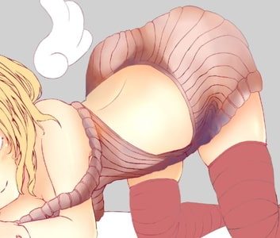

月並み仕勝ちのイラストメイキング
こんにちは皆さん、もう少しでお正月ですね。
P班二回生のmuuです。
「SofmeAdventCalendar2018」22日の今日はこのイラストのメイキングを解説します。
使用ツールはCLIP STUDIOです。
それなりに見れる絵を用意しましたが、デザイン的な価値は低いです。
説明する作業の工程を簡単にするためと言い訳しておきます。
目次
1.ラフ～下書き
2.線画～下塗り
3.色塗り
4.仕上げ
5.おわりに
ラフ～下書き
（あやっべ、ラフ服着せてね―じゃん）
まずはラフです。大きめのブラシサイズで構図を考えます。
今回は構図をあれこれ考えながら書いているので、
下書きまでに結構キャラのシルエットが変化します。
ラフではイメージを固めることを意識して書き出していきます。
イメージが出来てきたら軽く細部を書いて下書きにしていきます。
ラフと下書きではたくさんの参考資料を用意して形を整えます。
イラストの参考は「pinterest」か「google画像検索」が簡単でポピュラーだと思います。
何度でも見返したいものはブックマーク等でストックしています。
さらにデッサン人形と参考書も必要に応じて使います。
重要な点は人物や物体の形を整えることと、自分の完成イメージを固めることです。
書き方によりますがラフから下書きの段階で最終的な完成度は
7割近く決定づけられると思います。
線画と塗りは工程がハッキリしているので、多くの場合下書きの段階で想像できる
（書き手にとっての）完成イメージから離れたものになりません。
完成イメージに近づけようとしたときにだけ言えますが。
今回の下書きはこんな具合です。
服のデザインは一時期流行った例のセーターを改変したようなものになっています。
まともに着れる服なのかは不明です。
真面目に書く場合はキャラクターのデザイン画を用意するべきでしょう。
線画～下塗り
下書きレイヤーの透明度を落とし線画を作ります。
線の色は下書きと線画で違うほうが書きやすいでしょう。
線画に使っているブラシはGペンです。
ブラシはわりと癖があるので、使用感に応じて調整すると良いと思います。
私はものぐさであまり設定をいじることはしないですが、
ブラシを検索するといろんな方の設定を見れたり、アセットにしたものをDL出来たりするので、
使いやすいブラシを使うと良いと思います。
下書きのおかしい箇所の修正や、デザインの調整をしつつ線を引いていきます。
髪は軽い印象を持たせるために丸みをもたせ、外側に隙間の開いた毛を付け加えます。
房のパターンはできるだけランダムにします。
つむじから終端までがつながっている線が多いですが、同じようにする方は少ないです。
仕上げの段階で線にも光を当てるので最終的にはほとんど見えなくなります。
線画ではできるかぎり丁寧に線を引いていくことが重要になります。
その分集中力を使うので、今回のような簡単な絵では使っていませんが
同じようなパーツがある場合にはコピペ＋自由変形した上で整えるなど、
楽をする努力をすると良いでしょう。
これで完成としても良いですが、線の強弱に一貫性がないのですこし加筆します。
太すぎる線を削って整え、線の交差によって生じる影を付けていきます。
この工程は好みで塗りに任せても良いと思います。
満足するまで手直ししたら線画は完成です。
仮の色で塗ります。
今回はここで具体的な配色を考えるので実際の下塗りに近い色で塗っていきます。
問題がなければそのまま下塗りとして使います。
きっちり目の線画なのでバケツツールでも塗れそうですが、
クリスタでは無料アセットの「隙間なく囲って塗るツール」を利用しています。
顔付近の塗りは一度目やまつげを非表示にして塗ったほうが簡単です。
肌は髪の下にもはみ出して塗っておきます。
下塗りで明暗まで付ける方もいます。
その場合はこの時点でより完成イメージに近いものを作ることが出来ます。
色塗り
次に色塗りです。
線画もですが、塗りは順番に塗りつつ途中で気になった部位を加筆しているため
説明画像と完成では少し出来栄えが異なります。
基本的にブラシはほとんど透明水彩を使って塗っていきます。
場合によってGペンやぼかしを使っています。
特に説明がない場合は通常レイヤーで重ねています。
まず肌の塗りです。
肌の色はよく使うためカラーパレットに入れています。
（最後にはたいてい調整しますが）
肉感を意識して影を付けます。
ざっくり画面右上から光が来ていることを想定しています。
みやすいように色を変更するとこんな感じです。
この上から、濃い影を塗り重ねていきます。
髪や服によって生じる影を意識して塗ります。
背中のあたりを少し水色で塗って、
同時にオーバーレイレイヤーによって全体の色味を調整します。
この水色はどこからかの反射光か何かで本当は通常の光源と同じく
法則性をもたせるみたいですが、
見栄え的に入れたいところに入れています。
肌以外にも、髪や服の塗りでも同じことを行います。
オーバーレイは始めの色の選択が適切であれば必要ないです。
塗り進めていて微妙だなと思ったら追加しています。
頬の赤みを作り、覆い焼き（発光）レイヤーで肌にハイライトを入れます。
ハイライトは仕上げのときに入れても良いでしょう。

次に髪を塗ります。
髪の流れと丸みを意識して明暗を付けます。
透明水彩で柔らかに書いた上に、Gペンで鋭く書いたものをなじませています。
1枚のレイヤーで書いていますが、2枚に分けても良いと思います。
塗った部分を黒くするとこんな感じです。
その上から濃い影を加えます。
これは頭や室内の物体によって生じた影を意識して入れていきます。
更に、最初に塗った影にクリッピングして、光との境界線を少し濃くします。
（水色の部分 実際は薄茶色）
これによって2次元っぽいメリハリが生まれます。
髪以外の箇所でもこの手法は使うことがあります。
レイヤーの構造はこのようになっています。
濃い影にも同じ処理を施すとこんな感じになります。
ハイライトレイヤーで光を描きます。
思ったより暗くなってしまったので
加算（発光）レイヤーで明るめにし、肌と同じ水色も差しておきます。
肌に触れる部分をすこし肌色に塗って、
さらに顔にかかった部分をマスクによって軽く透かして完成です。

次に服の塗りです。
まず下塗りが灰色では映えないのでピンクに変更しました。
髪と同様に薄い影、濃い影を加えます。
濃い影と光の境界線をオレンジに塗ります。

全体の色を整えて完成です。
靴下、羽や布も同様の手順で塗ります。
キャラ塗りの最後にまつげを含む目です。
先にまぶたのあたりを肌レイヤーで塗っていなかったので加筆しています。
レイヤーごとの工程（一部2つのレイヤー1枚に省略）を載せますが、
気分や作品によって書き方が大きく変わります。
最近は目全体の球体感を出す書き方が好みです。
途中のキラキラとしたテクスチャは「綺麗汚し」というアセットブラシを使っています。
それ以外ではGペンか透明水彩を使っています。
差がほとんどわからねえ！ってやつは多分飛ばしてもいい工程です。
キャラ塗りはこれでだいたい完成です。
背景は今回あまり書き込まないので仕上げと並行して行います。
仕上げ
線画に色を加えて塗りとなじませます。
（少しまつげを整えています）
線の周囲の色をスポイドで拾い、薄く水彩で塗ると良い感じになると思います。
この工程は線画や仮塗りの段階で行う方も居ます。
服と同じ要領でベッドとカーテン的なものを塗ります。
背景は透明水彩で薄いカーテンを表現して、
その後ろのレイヤーでさらに奥にあるものを軽く書いてぼかしています。
全体を見て気になるところに影を付け加え、光を与えたいところにはオレンジ色を加えます。
オレンジを書いたレイヤーをスクリーンに変更し、不透明度を20～40に調整します。
こうすることで簡単にそれっぽい効果をつけることが出来ます。
さらに白いパーティクル（点）を付け加えて完成です。
おわりに
おつかれさまでした。
やはりといいますか、ありふれたメイキング解説となりました。
しかしこういうものは数あるほどに誰かが何かしらを得られる機会が増えると思っていますので
一つ書いてみることにした次第です。
凡俗な記事の最後ですから、ベタな文章をつらつらと。
あまりに実力から離れて高いものを作ろうとすると気力が続かないことがあります。
ノリノリのときはいいですが。
自分の体力と精神状態を考え、適切な負荷をかけて練習します。
自分自身を把握することで、平常時ならばメンタルやモチベーションの類は
ある程度操作できます。
技術の向上においては、自分の制作物を見て
「どこがうまく行っていないのか」
「次にどこを直せば良いのか」
上手なものを見たときに
「なんで上手だと感じるのか」
「どうすれば自分のやり方に落とし込めるのか」
を考えることが重要だと思います。
これは初め意識しなければできないことですが、
慣れればすべての場面で深い観察を行えるようになります。
その意味では毎日24時間技術を獲得するチャンスを得ていることになります。
この観察と、自分を思い通りに動かすことと、
妥協点のいかんによって制作物の出来栄えが決まると考えられます。
3点はとてもひろいことを示していて、具体性に欠けるとは付け加えておきます。
技術は理由なくして向上しません。
私も来年はもっと良いものを作る年にすることにします。
それでは、良い一日を。